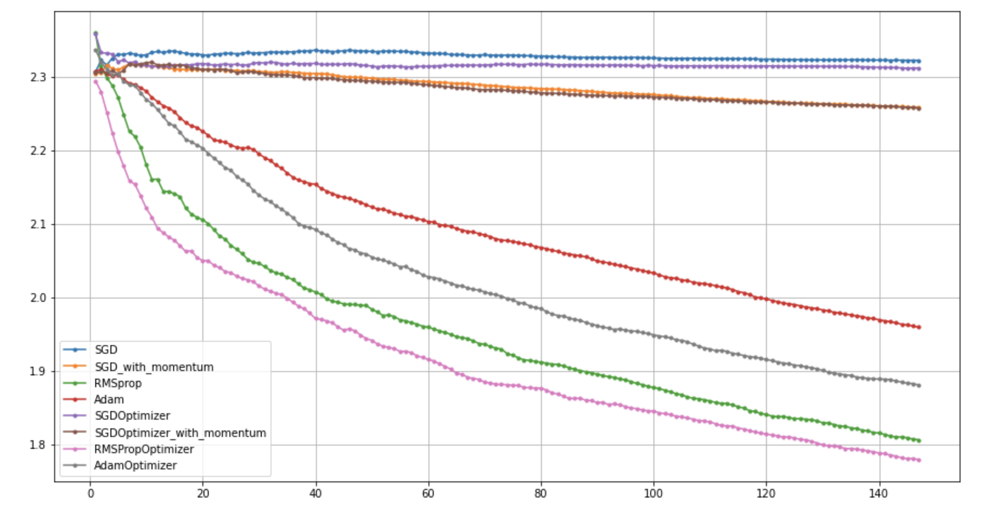
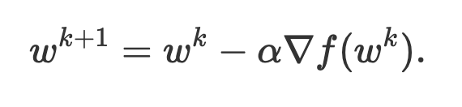
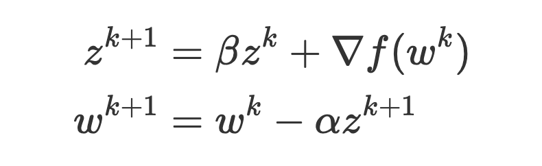

1 Who’s Adam? Why should we care about “his” friends?!
Adam is an Optimizer. He has many friends but his dearest are SGD, Momentum & RMSprop.
Each of Adam’s friends has contributed to Adam’s personality. So to get to know Adam very well, we should first meet the friends. We start out with SGD first, then meet Momentum, RMSprop and finally Adam.
In this blog post we are going to re-implement
SGD,SGD with Momentum,RMSprop&Adam. The major contribution of this blog post is to help the reader re-implement these algorithms keeping the implementations simple & by using minimal lines of code. We try to understand these algoirthms from a code perspective rather than from a mathematical perspective. I would also like to refer the reader to Sebastian Ruder’s blog on Optimizers here for a more theoretical introduction. We also compare the implementations with PyTorch’s implementations to check accuracy.
This blog post has been structured the following way:
2 Introduction
In this blog post we are going to re-implement SGD, Momentum, RMSprop and Adam from scratch.
In this blog post, the code for the Optimizers has been mostly copied from PyTorch but follows a different structure to keep the code implementations to a minimum. The implementations for these various Optimizers in this blog post are “much shorter” than those in PyTorch.
I also compared the re-implementations with PyTorch’s implementations and excited to share results below! SGD, SGD_with_momentum, RMSprop and Adam are from Pytorch whereas SGDOptimizer, SGDOptimizer_with_momentum, RMSPropOptimizer and AdamOptimizer are our own re-implementations. As shown in the fig-1 below, results are comparable!
Refer here for a complete working notebook to reproduce
fig-1.

3 Resources/Credits
Generally the resources section is at the last but I’d like to share some wonderful resources right at the start that have helped shape this blog post in it’s current form.
- Introduction to SGD by Jeremy Howard. In lesson-2 of Course 19 fast.ai, Jeremy re-implements SGD from scratch using Python!
- Introduction to Optimizers by Jeremy Howard. In lesson-5 of Course 19 fast.ai, Jeremy re-implements
SGD,Momentum,RMSprop&Adamin Microsoft Excel! This is a great resource to learn about these algorithms. I started here too and then re-implemented the algorithms in PyTorch that has led to this blog post. - Generic Optimizer by Jeremy Howard. In Lesson-11 of Course 19 fast.ai, Jeremy creates a Generic Optimizer. Some of the code in this blog post has been inspired from here, but majorly we follow the code implementations as in PyTorch.
- CS231n Introduction to Optimizers. This is another great resource from Stanford that introduces Optimization and is a great resource to get an intuition for SGD. It also showcases how to compute the gradients from scratch without using
torch.autograd. In our blog post, we usetorch.autogradinstead to compute the gradients. - An overview of gradient descent optimization algorithms by Sebastian Ruder is an excellent blog post by one of my favorite researchers and presents the various Optimization algorithms such as Adagrad, Adadelta, AdaMax, Nadam, AMSGrad and more in an easy to understand manner!
- Why Momentum Really Works from distil.pub. If you haven’t heard of distil.pub, stop what you’re doing and visit this wonderful website that distils research using visual explainations that are easy to understand!
Having mentioned these resources, we are now ready to start on our journey of re-implementing SGD, Momentum, RMSprop and Adam from scratch. We first start out with SGD below:
4 Stochastic Gradient Descent
In this section we will first introduce what is Stochastic Gradient Descent and then based on our understanding, implement it in PyTorch from scratch.
4.1 What is Stochastic Gradient Descent?
For an intuitive understanding, refer fig-2 below:

Let’s say we are standing at a certain point A of a parabolic hill as shown in fig-2 and we wish to find the lowest point on this curve. Can you think of some ways to do this? Well, we could try going in a random direction, calculate the value of the function and if it’s lower than the previous value, we could take a step in that direction. But this process is slow. With some mathematical magic, we can make this process faster. In fact, the fastest way down a function or the sleepest way down the hill is the one in the opposite direction of the gradient. Gradient at point A is the slope of the parabolic function, and by calculating the gradients, we can find the steepest direction in which to move to minimise the value of the function. This is referred to as Gradient Descent. Ofcourse in a high dimensional space, calculating the gradients is a little bit more complicated than in fig-2 but the idea remains the same. We take a step from point A directed by the gradients to follow the steepest path downwards to point B to find the lowest value of the curve. The step-size is governed by a parameter called learning rate. The new position B then can be defined as B = A - lr * A.grad where A.grad represents the slope/gradients of the curve at point A.
The stochasticity in Stochastic Gradient Descent arises when we compute the batch gradients. This has been explained below through pseudo-code in Vanilla Stochastic Gradient Descent.
From the Introduction to SGD by Jeremy Howard, and from fig-2, we already know that to perform Gradient Descent, we need to be able to calculate the gradients of some function that we wish to minimise with respect to the parameters.
We don’t need to manually calculate the gradients and as mentioned in this video by Jeremy, PyTorch can already do this for us using torch.autorgrad.
So now that we know that we can compute the gradients, the procedure of repeatedly evaluating the gradient and then performing a parameter update is called Gradient Descent. Its vanilla version looks as follows:
# Vanilla Gradient Descent
for epoch in range(num_epochs):
predictions = model(training_data)
loss = loss_function(predictions, ground_truth)
weights_grad = evaluate_gradient(loss) # using torch by calling `loss.backward()`
weights -= learning_rate * weights_grad # perform parameter updateIn Vanilla Gradient Descent, we first get the predictions on the whole training data, then we calculate the loss using some loss function. Finally, we update the weights in the direction of the gradients to minimise the loss. We do this repeatedly for some predefined number of epochs.
Can you think of possible problems with this approach? Can you think of why this approach could be computationally expensive?
In large-scale applications, the training data can have on order of millions of examples. Hence, it seems wasteful to compute the full loss function over the entire training set in order to perform only a single parameter update. A very common approach to addressing this challenge is to compute the gradient over batches of the training data. This approach is reffered to as Stochastic Gradient Descent:
# Vanilla Stochastic Gradient Descent
for epoch in range(num_epochs):
for input_data, labels in training_dataloader:
preds = model(input_data)
loss = loss_function(preds, labels)
weights_grad = evaluate_gradient(loss) # using torch by calling `loss.backward()`
weights -= learning_rate * weights_grad # perform parameter updateIn Stochastic Gradient Descent, we divide our training data into sets of batches. This is essentially what the DataLoader does, it divides the complete training set into batches of some predefined batch_size.
So let’s keep the key things in our mind before we set out to implement SGD: 1. Divide the training data into batches, PyTorch DataLoaders can do this for us. 2. For each mini-batch: - Make some predictions on the input data and calculate the loss. - Calculate the gradients using torch.autograd based on the loss. - Take a step in the opposite direction of gradients to minimise the loss.
We follow a similar code implementation to PyTorch. In PyTorch as mentioned here, there is a base class for all optimizers called torch.optim.Optimizer. It has some key functions methods like zero_grad, step etc. Remember from our general understanding of SGD, we wish to be able to update the parameters (that we want to optimize) by taking a step in the opposite direction of the gradients to minimise the loss function.
Thus, from a code implementation perspective, we would need to be able to iterate through all the parameters and do p = p - lr * p.grad, where p refers to parameters and lr refers to learning rate.
With this basic understanding let’s implement an Optimizer class below:
class Optimizer(object):
def __init__(self, params, **defaults):
self.params = list(params)
self.defaults = defaults
def grad_params(self):
return [p for p in self.params if p.grad is not None]
def step(self):
raise NotImplementedError
def zero_grad(self):
for p in self.grad_params():
p.grad.zero_()The Optimizer class above implements two main methods - grad_params and zero_grad. Doing something like self.grad_params() grabs all those parameters as a list whose gradients are not None. Also, calling the zero_grad() method would zero out the gradients as explained in this video.
At this stage you might ask, what are these parametrs? In PyTorch calling
model.parameters()returns a generator through which we can iterate through all parameters of our model. A typical training loop as you might have seen in PyTorch looks something like:
model = create_model()
optimizer = torch.optim.SGD(model.parameters(), lr=1e-4)
for input_data, labels in train_dataloader:
preds = model(input_data)
loss = loss_fn(preds, labels)
loss.backward()
optimizer.step()
optimizer.zero_grad()In the training loop above we first create an optimizer by passing in model.parameters() which represents the parameters that we wish to optimize. We also pass in a learning rate that represents the step size. In PyTorch, calling loss.backward() is what appends an attribute .grad to each of the parameters in model.parameters(). Therefore, in our implementation, we can grab all those parameters whose gradients are not None by doing something like [p for p in self.params if p.grad is not None].
Now to implement SGD optimizer, we just need to create a method called step that does the optimization step and updates the value of the model parameters based on the gradients.
class SGDOptimizer(Optimizer):
def __init__(self, params, **defaults):
super().__init__(params, **defaults)
def step(self):
for p in self.grad_params():
p.data.add_(p.grad.data, alpha=-self.defaults['lr'])This line p.data.add_(p.grad.data, alpha=-self.defaults['lr']) essentially does p = p - lr * p.grad which is the SGD step for each mini-batch. Thus, we have successfully re-implemented SGD Optimizer.
5 SGD with Momentum
Classical Momentum as described in this paper can be defined as:

Here µ represents the momentum factor, typically 0.9. Δ𝑓(θt) represents the gradients of parameters θ at time t. And ε represents the learning rate.
As can be seen from eq-1, essentially we add a factor µ times the value of the previous step to the current step. Thus instead of going p = p - lr * p.grad, the new step value becomes new_step = µ * previous_step + lr * p.grad whereas previously for SGD, the step value was lr * p.grad.
What is momentum you might ask? Why does it work?
From Why Momentum Really Works from distil.pub -
Here’s a popular story about momentum - gradient descent is a man walking down a hill. He follows the steepest path downwards; his progress is slow, but steady. Momentum is a heavy ball rolling down the same hill. The added inertia acts both as a smoother and an accelerator, dampening oscillations and causing us to barrel through narrow valleys, small humps and local minima. It is simple — when optimizing a smooth function f, we make a small step in the gradient -

For a step-size small enough, gradient descent makes a monotonic improvement at every iteration. It always converges, albeit to a local minimum. Things often begin quite well — with an impressive, almost immediate decrease in the loss. But as the iterations progress, things start to slow down. You start to get a nagging feeling you’re not making as much progress as you should be. What has gone wrong?
The landscapes are often described as valleys, trenches, canals and ravines. The iterates either jump between valleys, or approach the optimum in small, timid steps. Progress along certain directions grind to a halt. In these unfortunate regions, gradient descent fumbles.
Momentum proposes the following tweak to gradient descent. We give gradient descent a short-term memory -

The change is innocent, and costs almost nothing. When = 0β=0 , we recover gradient descent. But for = 0.99β=0.99 (sometimes 0.9990.999, if things are really bad), this appears to be the boost we need. Our iterations regain that speed and boldness it lost, speeding to the optimum with a renewed energy.
Thus, essentially, with Momentum, if the momentum factor as in eq-3 is β, then compared to SGD, instead of the new step just being guided by the gradients, is also guided by β times the old step size. Thus, to implement momentum, we would need to keep a track of the previous steps. We do this by storing moment_buffer inside a param_state for each parameter as in the implementation below:
class SGDOptimizer(Optimizer):
def __init__(self, params, **defaults):
super().__init__(params, **defaults)
self.lr = defaults['lr']
self.µ = defaults['momentum']
self.state = defaultdict(dict)
def step(self):
for p in self.grad_params():
param_state = self.state[p]
d_p = p.grad.data
if 'moment_buffer' not in param_state:
buf = param_state['`moment_buffer`'] = torch.clone(d_p).detach()
else:
buf = param_state['moment_buffer']
buf.mul_(self.µ).add_(d_p)
p.data.add_(buf, alpha=-self.lr)From Sebastian Ruder’s blog: > At the core of Momentum is this idea - why don’t we keep going in the same direction as last time? If the loss can be interpreted as the height of a hilly terrain, then the optimization process can then be seen as equivalent to the process of simulating the parameter vector as rolling on the landscape. Essentially, when using momentum, we push a ball down a hill. The ball accumulates momentum as it rolls downhill, becoming faster and faster on the way. The same thing happens to our parameter updates: The momentum term increases for dimensions whose gradients point in the same directions and reduces updates for dimensions whose gradients change directions. As a result, we gain faster convergence.
From a code implementation perspective, for each parameter inside self.grad_params(), we store a state called momentum_buffer that is initialized with the first value of p.grad. For every subsequent update, we do buf.mul_(self.µ).add_(d_p) which represents buf = buf * µ + p.grad. And finally, the parameter updates become p.data.add_(buf, alpha=-self.lr) which is essentially p = p - lr * buf.
Thus, we have successfully re-implemented eq-1.
6 RMSprop
RMSprop Optimizer brings to us an idea that why should all parameters have the step-size when clearly some parameters should move faster? It’s great that RMSprop was actually introduced as part of a MOOC by Geoffrey Hinton in his course.
From the PyTorch docs: > The implementation here takes the square root of the gradient average before adding epsilon (note that TensorFlow interchanges these two operations). The effective learning rate is thus α/(sqrt(v) + ϵ) where α is the scheduled learning rate and v is the weighted moving average of the squared gradient.
The update step for RMSprop looks like:

Essentially, for every parameter we keep a moving average of the Mean Square of the gradients. Next, we update the parameters similar to SGD but instead by doing something like p = p - lr * p.grad, we instead update the parameters by doing p(t) = p(t) - (lr / MeanSquare(p, t)) * p(t).grad.
Here, p(t) represents the value of the parameter at time t, lr represents learning rate and MeanSquare(p, t) represents the moving average of the Mean Square Weights of parameter p at time t.
Key takeaway to be able to implement RMSprop - we need to able to store the exponentially weighted moving average of the mean square weights of the gradients.
Therefore, we can update the implementation of SGD with momentum to instead implement RMSprop like so:
class RMSPropOptimizer(Optimizer):
def __init__(self, params, **defaults):
super().__init__(params, **defaults)
self.lr = defaults['lr']
self.α = defaults['alpha']
self.eps = defaults['epsilon']
self.state = defaultdict(dict)
def step(self):
for p in self.grad_params():
param_state = self.state[p]
d_p = p.grad.data
if 'exp_avg_sq' not in param_state:
exp_avg_sq = param_state['exp_avg_sq'] = torch.zeros_like(p, memory_format=torch.preserve_format)
else:
exp_avg_sq = param_state['exp_avg_sq']
exp_avg_sq.mul_(self.α).addcmul_(d_p, d_p, value=1-self.α)
denom = exp_avg_sq.sqrt().add_(self.eps)
p.data.addcdiv_(d_p, denom, value=-self.lr)As can be seen inside the step method, we iterate through the parameters with gradients, and store the initial value of the gradients inside the a variable called d_p which represents derivative of parameter p.
Next, we initialize the exponential moving average of the square of the gradients exp_avg_sq as an empty array filled with zeros of the same shape as d_p. For every next step, this exp_avg_sq is updated by this line of code: exp_avg_sq.mul_(self.α).addcmul_(d_p, d_p, value=1-self.α). This equates to exp_avg_sq = (self.α * exp_avg_sq) + (1 - self.α * (d_p**2)).
Therefore, we are keeping an exponentially weighted moving average of the square of the gradients. But as can be seen in eq-2, the update step of RMSprop actually divides by the sqrt of this exp_avg_sq. So our denominator denom becomes exp_avg_sq.sqrt().add_(self.eps). eps is added for numerical stability.
Finally, we do our update step p.data.addcdiv_(d_p, denom, value=-self.lr) which equates to p = p - (self.lr * d_p)/denom thus performing the RMSprop update step as in eq-2.
Therefore, we have successfully re-implemented RMSprop from scratch.
7 Adam
From the paper:
The method computes individual adaptive learning rates for different parameters from estimates of first and second moments of the gradients; the name Adam is derived from adaptive moment estimation.
In this section we are going to discuss Adam. Adam’s algorithm as defined in the paper is shown below:

We are going to re-implement this algorithm using PyTorch.
I have long tried to understand all the math behind
Adam, reading the paper multiple times. But I believe that I can at best contribute towards helping the reader re-implementAdamin PyTorch and not in explaining all the math behind the algorithm. In various papers and algorithms such as RMSprop, it is mentioned that dividing by the sqrt of second moments of the gradients, we can achieve better stability. As to why? I am not sure. Having said that, it is best to assume that this given algorithm works and try to re-implement in PyTorch.
As can be seen from fig-2, to re-implement Adam, we need to be able to keep a moving average of the first and second moments of the gradients. Finally, based on the bias correction term 1 - β1t for the first moment estimate and 1 - β2t for the second moment estimate, we compute the biased corrected version and first and second raw moment estimates.
Finally, the update step for the parameters at time t becomes:
θt = θt-1 - α * m_hatt / (sqrt( v_hatt) + ε)
Where, θt - Parameter vector at time t α - Learning rate m_hatt - Bias corrected first moment estimate v_hatt - Bias corrected second moment estimate
Replicating this algorithm in PyTorch is fairly straightforward as shown in the code implementation below:
class AdamOptimizer(Optimizer):
def __init__(self, params, **defaults):
super().__init__(params, **defaults)
self.lr = defaults['lr']
self.ß1 = defaults['beta1']
self.ß2 = defaults['beta2']
self.eps = defaults['epsilon']
self.state = defaultdict(dict)
self.state_step = 0
def step(self):
for p in self.grad_params():
self.state_step+=1
param_state = self.state[p]
d_p = p.grad.data
if 'exp_avg' not in param_state:
exp_avg = param_state['exp_avg'] = torch.zeros_like(p, memory_format=torch.preserve_format)
else:
exp_avg = param_state['exp_avg']
if 'exp_avg_sq' not in param_state:
exp_avg_sq = param_state['exp_avg_sq'] = torch.zeros_like(p, memory_format=torch.preserve_format)
else:
exp_avg_sq = param_state['exp_avg_sq']
exp_avg.mul_(self.ß1).add_(d_p, alpha=1-self.ß1)
exp_avg_sq.mul_(self.ß2).addcmul_(d_p, d_p, value=1-self.ß2)
bias_correction_1 = 1 - self.ß1**self.state_step
bias_correction_2 = 1 - self.ß2**self.state_step
unbiased_exp_avg = exp_avg/bias_correction_1
unbiased_exp_avg_sq = exp_avg_sq/bias_correction_2
denom = unbiased_exp_avg_sq.sqrt().add_(self.eps)
step_size = self.lr / bias_correction_1
p.data.addcdiv_(unbiased_exp_avg, denom, value=-step_size)Looking at the step method of the above implementation, we can directly relate the implementation to the Adam algorithm as in fig-2. We store the gradients of the paramter p in a variable called d_p. Next, for each parameter we store a state referred to as param_state.
From the algorithm, we know that we need to store both first and second moments of the gradients. Therefore, if both exp_avg (first moment) and exp_avg_sq (second moment) are null, we initialize them as zeroes with the same shape as p.
Once initialized, then for every subsequent step we grab the first and second moments and update them based on the update rule as in the Adam algorithm.
For first moment exp_avg, we do exp_avg.mul_(self.ß1).add_(d_p, alpha=1-self.ß1) which equates to exp_avg = self.ß1 * exp_avg + (1 - self.ß1) * d_p. This is the same as the Update biased first moment step in the algorithm. exp_avg is equivalent to mt in the algorithm.
For the second moment exp_avg_sq, we do exp_avg_sq.mul_(self.ß2).addcmul_(d_p, d_p, value=1-self.ß2) which equates to exp_avg_sq = self.ß2 * exp_avg_sq + (1 - self.ß2) * (d_p**2). This is the same as the update biased second raw moment estimate step in the algorithm. exp_avg_sq is equivalent to vt in the algorithm.
Finally, we calculate the bias correction terms as mentioned in the algorithm and calculate the unbiased_exp_avg which equates to m_hatt in the algorithm. We also calculate the unbiased_exp_avg_sq after bias correction and unbiased_exp_avg_sq equates to v_hatt in the algorithm.
We calulate the denominator denom as in the algorithm denom = unbiased_exp_avg_sq.sqrt().add_(self.eps). Finally, we perform the parameter update step p.data.addcdiv_(unbiased_exp_avg, denom, value=-step_size) which equates to p = p - unbiased_exp_avg * step_size / denom that is equivalent to the last step in the algorithm.
Thus, we have successfully re-implemented Adam.
8 Working notebook
Refer here for a complete working notebook to reproduce
fig-1.
9 Conclusion
I hope that through this blog, I have been able to explain all the magic that goes on inside the various optimizers such as SGD, Momentum, RMSprop and Adam!
As usual, in case we have missed anything or to provide feedback, please feel free to reach out to me at @amaarora.
Also, feel free to subscribe to my blog here to receive regular updates regarding new blog posts. Thanks for reading!